【5月グループワーク】
クロミズムとは…
クロミズム (chromism) は物質の光物性（色・蛍光など）が外部からの刺激によって
可逆的に変化する現象をさす。クロミズムを示す物質のことを
クロミック物質（あるいはクロミック材料、chromic material）という。
出典:フリー百科事典『ウィキペディア（Wikipedia）』
→サーモクロミック
→ハイドロクロミック
【これらの技術を利用した既存商品】
熱で発色する（サーモクロミック）
・マニキュア
・タンブラー
・Tシャツ
・リング
・哺乳瓶
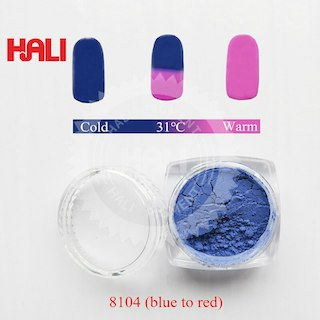
水で発色する（ハイドロクロミック）
・おもちゃ
・傘
・雨の日限定のストリートアート
・コースター
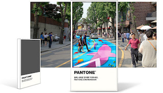
【初期案】
・スクイズボトルをモチーフにした
・キャップの上に付けるのでなく、キャップ自体として使う
・白い部分は上下に動くが外れはしない
・白い部分をハイドロクロミック
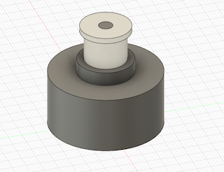 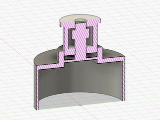
【類似商品】
スクイズボトル
→冷却ミスト付きスクイズボトル
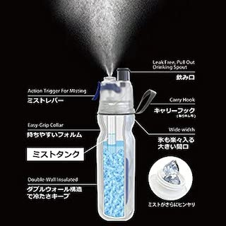
→カップ付きスクイズボトル
ボトルキャップ
→ストロー付き
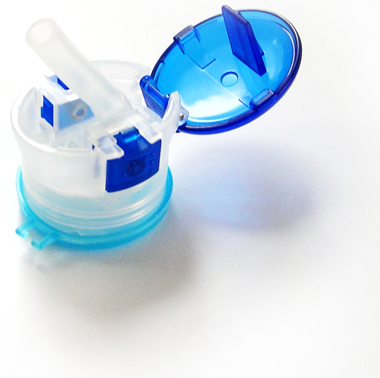
→ワンタッチキャップ
→ただの熱でイラストが変わるボトルなどとは違い、色が変わることで知らせる新しい商品
【改善案】
・飲み口を唇にする
・飲む際に水が触れることで発色
→このアイテムをキャップの代わりに装着するだけでペットボトル飲料がスクイズボトルに早変わり
→飲み頃のサインを知らせ、水分補給を促す
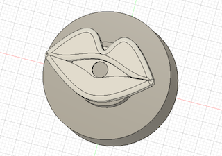
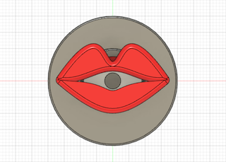
 →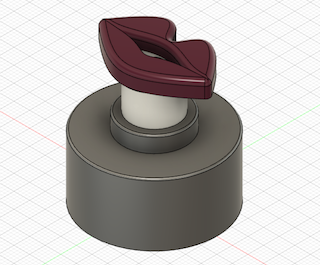
→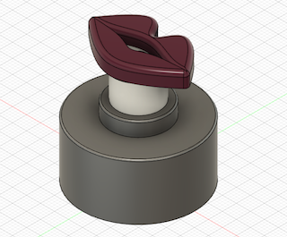


 →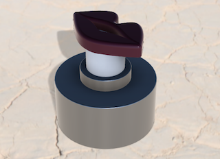
→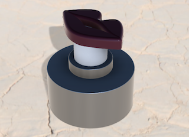